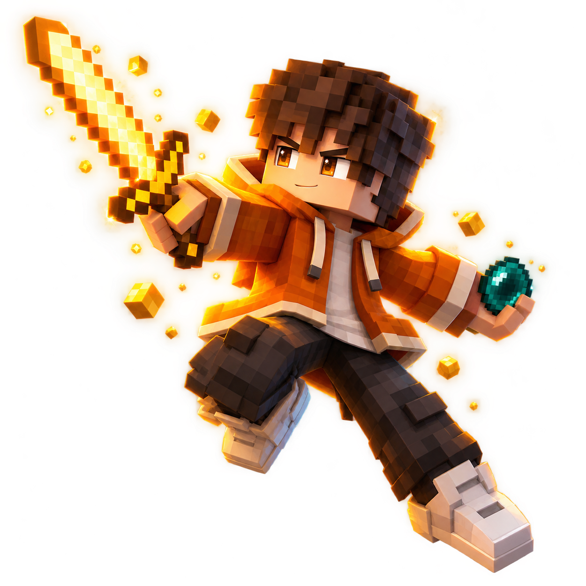
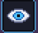
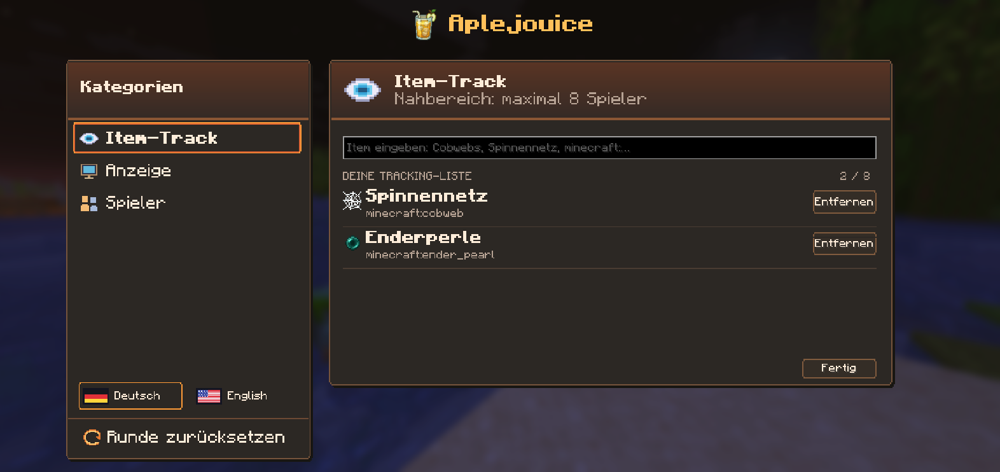
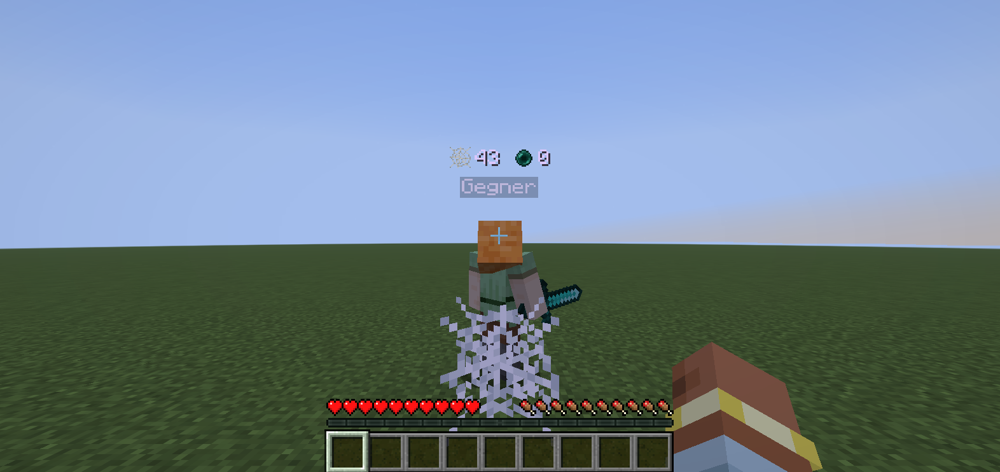

Deine Watchlist.
Suche Items nach Namen oder ID und füge bis zu acht zur Liste hinzu. Webs, Totems, Enderperlen und End-Crystals sind mit dabei.
Bis zu 8 Item-TypenWie viele Webs? Wie viele Totems? Sieh erfasste Item-Nutzungen direkt über deinem Gegner. Mit der Aplejouice Mod.


KLEINE MOD. KLARER FOKUS.
Deine Items, dein Gegner, deine Anzeige.
Stell genau das ein, was du im Kampf sehen willst.
Suche Items nach Namen oder ID und füge bis zu acht zur Liste hinzu. Webs, Totems, Enderperlen und End-Crystals sind mit dabei.
Bis zu 8 Item-TypenWähle einen geladenen Spieler aus der Liste oder greife ihn an. Im Gegner-Modus zählt nur dein ausgewähltes Ziel.
Auswählen oder angreifenBehalte nahe Spieler im Blick oder fokussiere einen Gegner. Nullwerte und Reichweite stellst du selbst ein.
Bis zu 8 nahe Spieler · max. 64 mPROBIER'S AUS
So liest sich das Tracking: Item nutzen, Zähler sehen. Klicke auf ein Item und teste die Anzeige in dieser Website-Demo.
Illustrative Demo. Im Spiel hängen die Zähler von den empfangenen Server-Ereignissen ab.
Wie genau ist das Tracking? ↗EIN TASTENDRUCK ENTFERNT
Ein aufgeräumtes Menü im Aplejouice-Stil.
Deutsch oder Englisch. Deine Einstellungen bleiben.


Manuell zurücksetzen oder automatisch, wenn du den Tod eines Spielers mitbekommst.
Wechsle direkt im Menü. Sprache, Item-Liste und Einstellungen werden gespeichert.
Gegner-Modus aus: nahe Spieler. Gegner-Modus an: erst auswählen oder angreifen.
BEREIT FÜR DIE NÄCHSTE RUNDE?
Für Minecraft Java 1.21.11.
Mit Fabric Loader ≥ 0.18.4, Fabric API und Java 21.
Beta 1.4.12 · Ungelistetes Modrinth-Projekt. Zugang nach Freigabe.
Installiere Fabric Loader ↗ für 1.21.11 und die passende Fabric API ↗.
Lege die Aplejouice-Mod-JAR zusammen mit Fabric API in den mods-Ordner deiner Spielinstanz.
Aktiviere Tracking im Menü und füge Items hinzu. Im Gegner-Modus wählst du zusätzlich einen Spieler aus.
NOCH KURZ
Die Mod erfasst das, was dein Client vom Server mitbekommt. Totem-Pops und Perlen nutzen Server-Ereignisse. Bei Webs und Crystals wird der Platzierer aus gehaltenem Item, Reichweite und Blickrichtung abgeleitet. Ist die Zuordnung mehrdeutig, kann eine Nutzung fehlen. Die Zahlen sind keine garantiert vollständige Server-Statistik.
Für das clientseitige Beobachten nicht. Optional kann dieselbe JAR auf einem Fabric-Server Vanilla-ITEM_USED-Statistiken an passende Clients senden.
Ja. Einstellungen und Item-Liste bleiben beim Serverwechsel und Neustart gespeichert. Ziele und Rundenzähler werden beim Serverwechsel zurückgesetzt; im Gegner-Modus wählst du dann erneut einen Spieler aus.
Aktuell Minecraft Java 1.21.11 mit Fabric. Neuere Versionen benötigen eine eigene Anpassung und sind nicht automatisch kompatibel. Die Taste J lässt sich in der Minecraft-Steuerung umbelegen.
Ja, unter der MIT-Lizenz. Auf GitHub kannst du den Code ansehen und Fehler melden. Ein Großteil des Codes sowie UI-Texte und gezeichnete Pixel-Icons sind mit OpenAI Codex entstanden. Die Mod selbst nutzt keine KI zur Laufzeit.